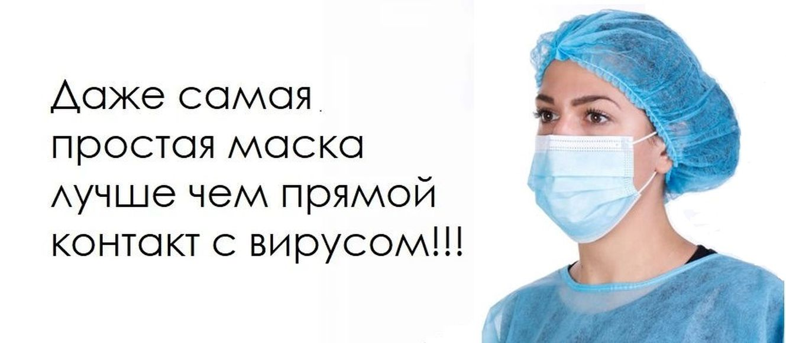

MedShop.ru
Welcom
МЕДИЦИНМКАЯ МАСКА защищает наши дыхательные пути и предотвращает попадания инфекция через слизистую.
Но если надеть медицинскую маску неправильно, то эффекта никакого не будет.
Неправильно надетая маска бесполезна и даже наносит вред. Маска это средство индивидуальной защиты человека.
90% людей даже не знают какой стороной правильно её носить, ну и носят как попало
Медицинская маска имеет две стороны, одна из которых светлая, другая - цветная.
Более светлый слой является воздушным фильтром, который удерживает бактерии от самого человека.
Как долго можно носить маску, сколько времени действует эффект фильтров.
Одноразовые медицинские маски, приобретенные в аптеке, годны до двух часов.
То есть, когда человек болеет ему стоит носить маску светлой стороной к себе (цветной стороной наружу).
При этом цветная сторона, обычно синяя, зелёная или розовая, является антибактериальным слоем, то есть если человек здоров и не хочет заразиться, то стоит надевать маску светлой стороной наружу.